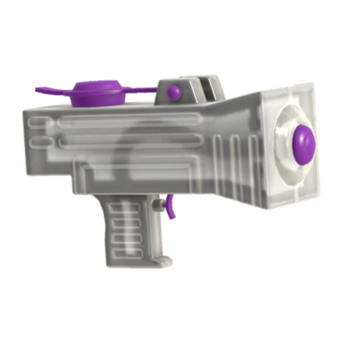

Dapple Dualies
The Dapple Dualies deal enough damage to splat opponents in three hits, unlike the Splat Dualies and Dualie Squelchers which need to land four hits to splat an enemy. In the post-roll state, the weapon's firing rate is 20% faster than normal, and its accuracy is improved as well.
Appearance
The Dapple Dualies are built on two main parts, both of which are a berry red color and connected to each other via a black handle. The bottom part of each dualie houses a white and light blue toothbrush, while the top part houses the nozzle and a small metal stick. The toothbrush is held in place via a small wire that holds it to the stick.

Splattershot Jr.
The Splattershot Jr. is a main weapon in the Splatoon series, coming from the weapon brand Splat. It is the first weapon used by all players, given at the start of the in-game tutorial. As the beginner weapon, the Splattershot Jr. appropriately has a quick firing rate, a high ink efficiency, and high shot spread, which enables its user to quickly ink large territories. Its loadout always includes both an offensive option and a strong defensive option. Since Version 3.2.0 of Splatoon 2, it is also the first weapon to feature a unique ink tank.
Appearance
The Splattershot Jr. is a blocky squirt gun, the main part of which changes color to match the user's ink. The gun has a large rectangular prism for a body, with another rectangular prism, this one much smaller, extending down to serve as a handhold. The inside angle between the two prisms houses a purple trigger. On the end of the main prism facing away from the user is a stocky, square-shaped funnel with a short purple nozzle on the end, and on top of it is a purple cap connected to the body by two small trapezoidal prisms. Inside the gun, there is a dip tube that connects the bottom of the trigger handhold to the nozzle.